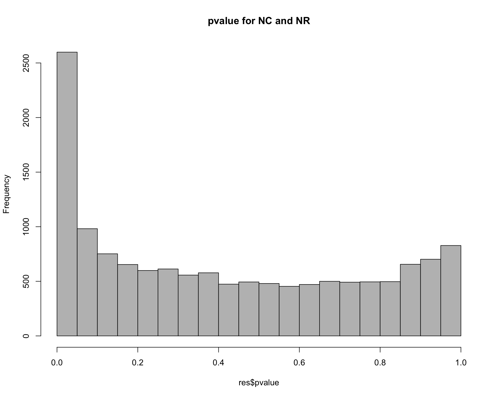
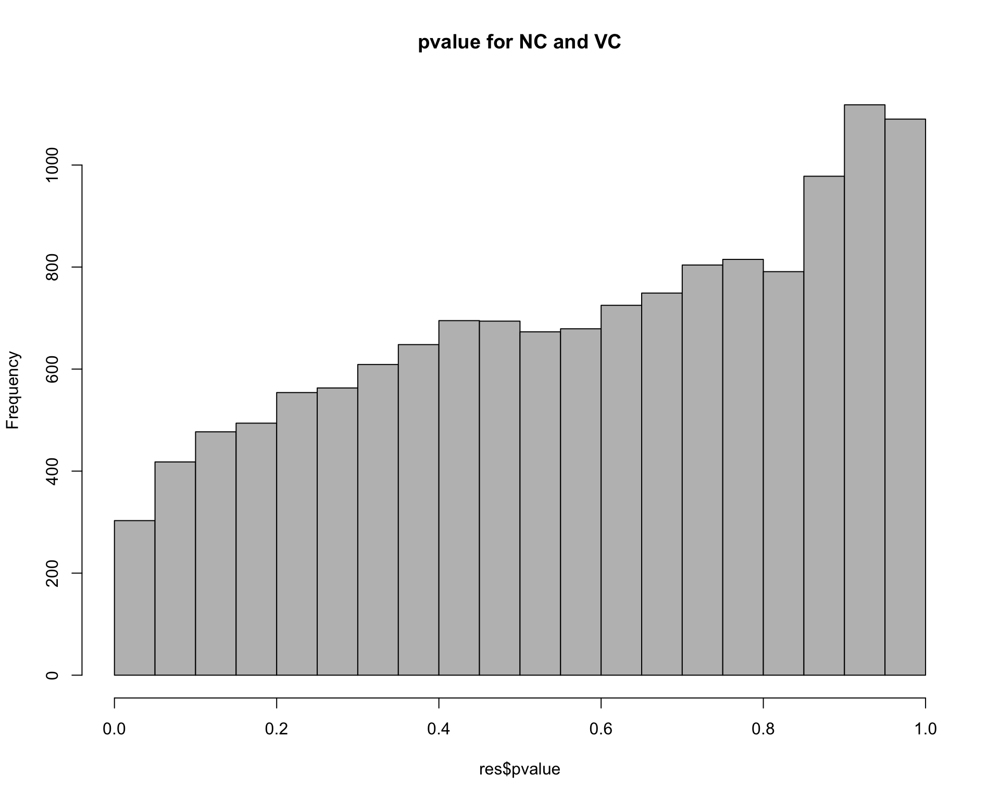
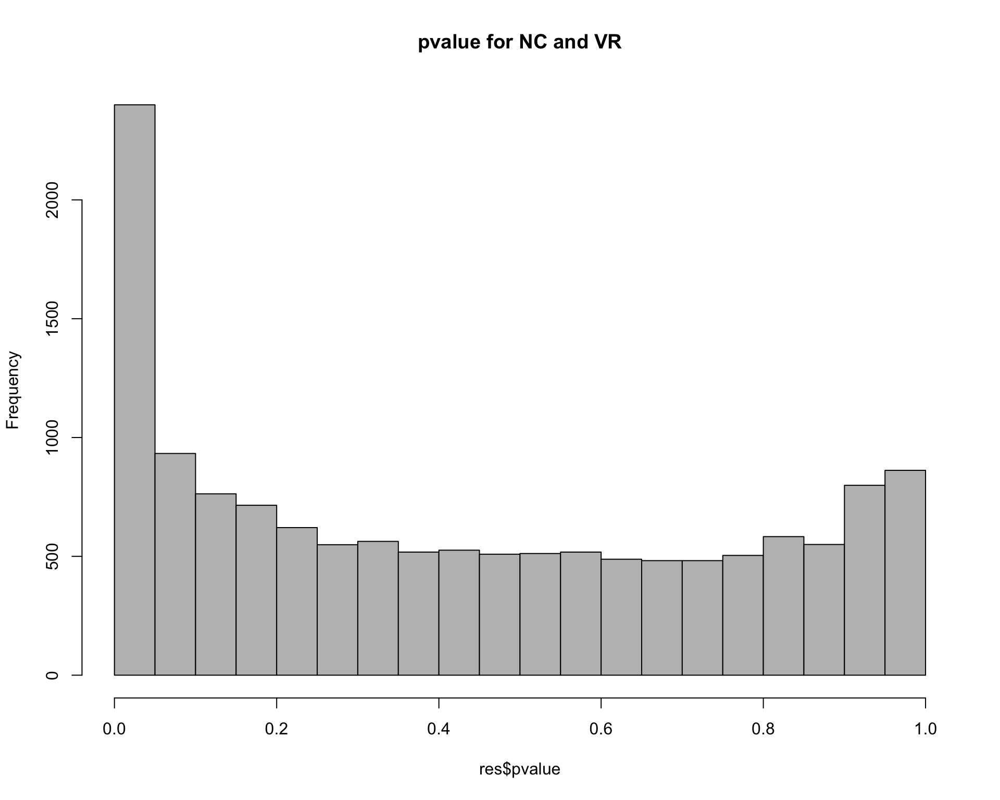
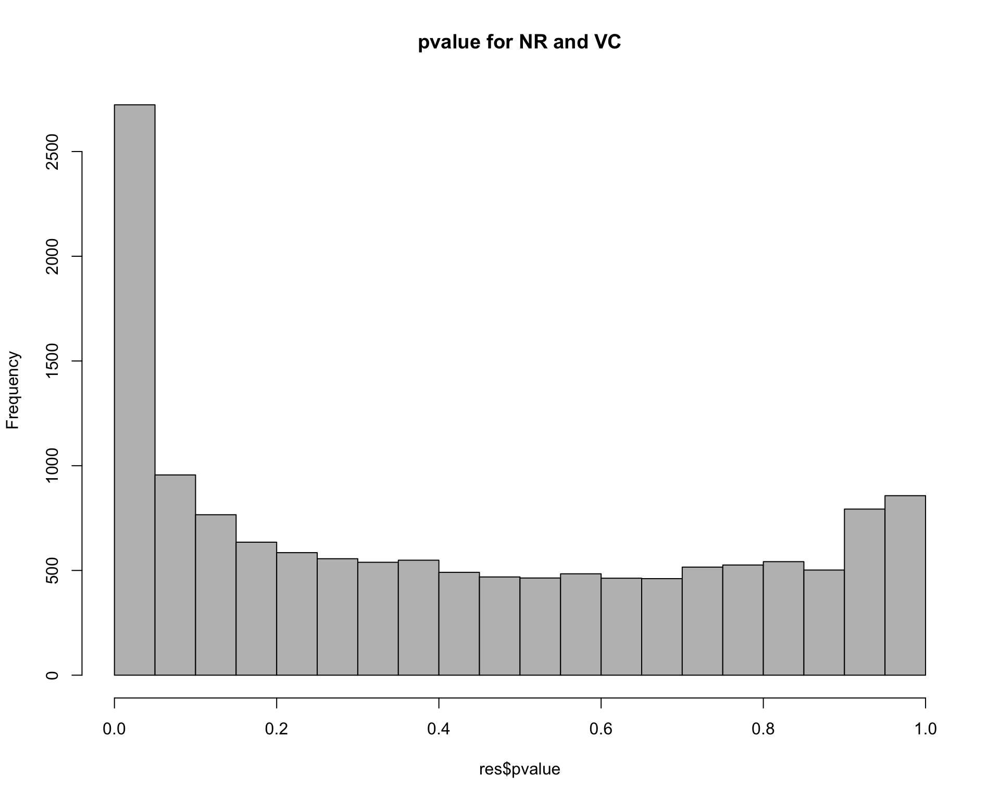
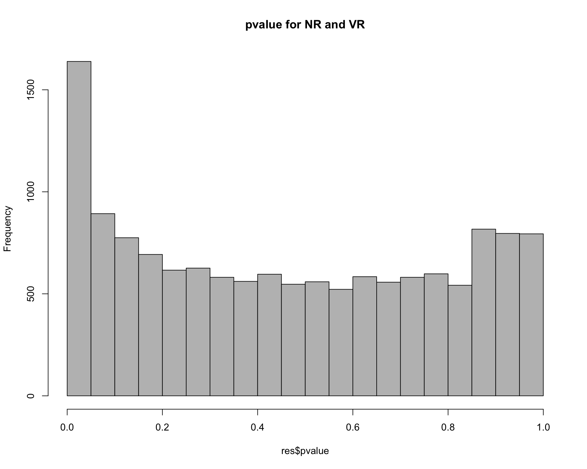
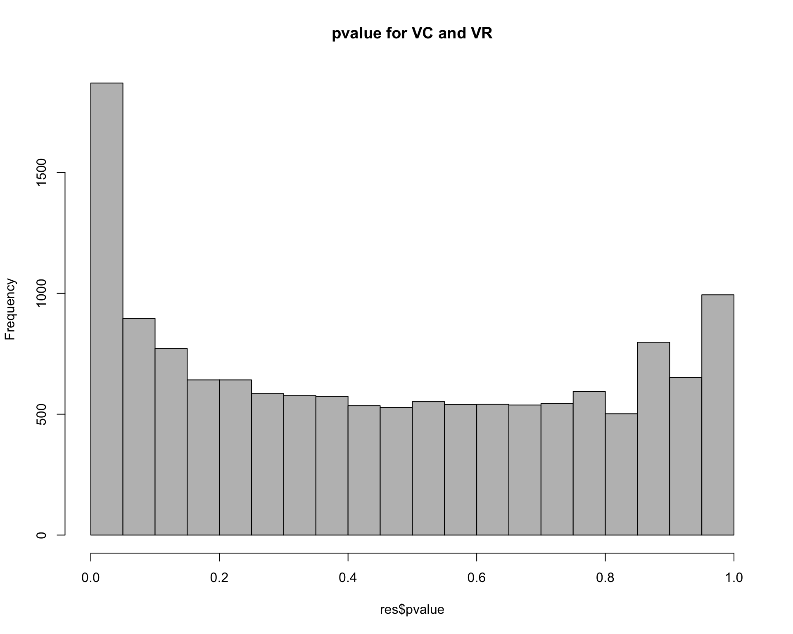
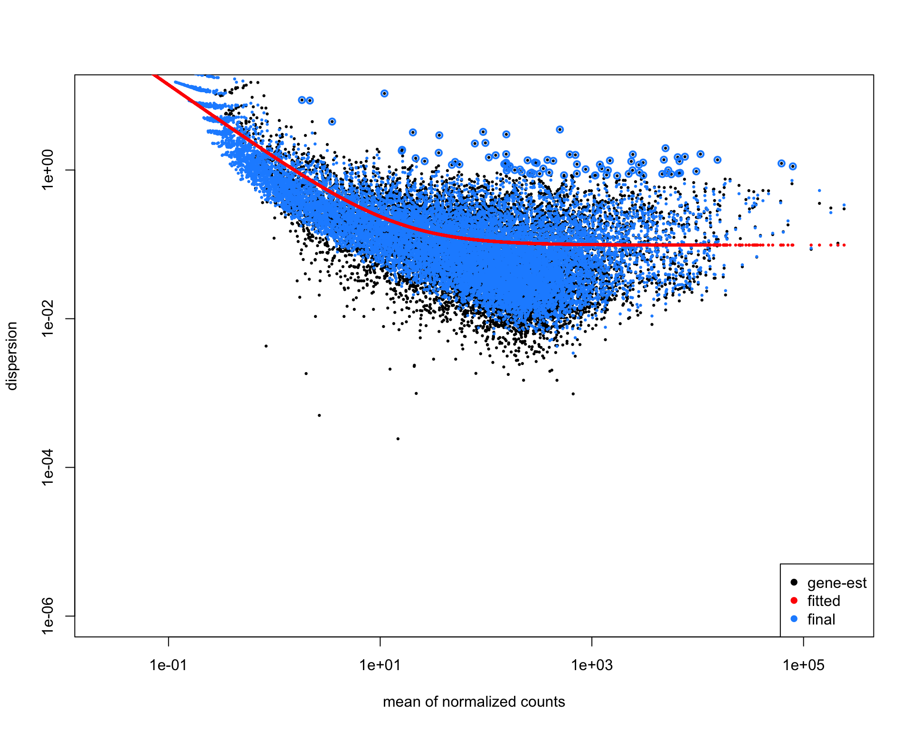
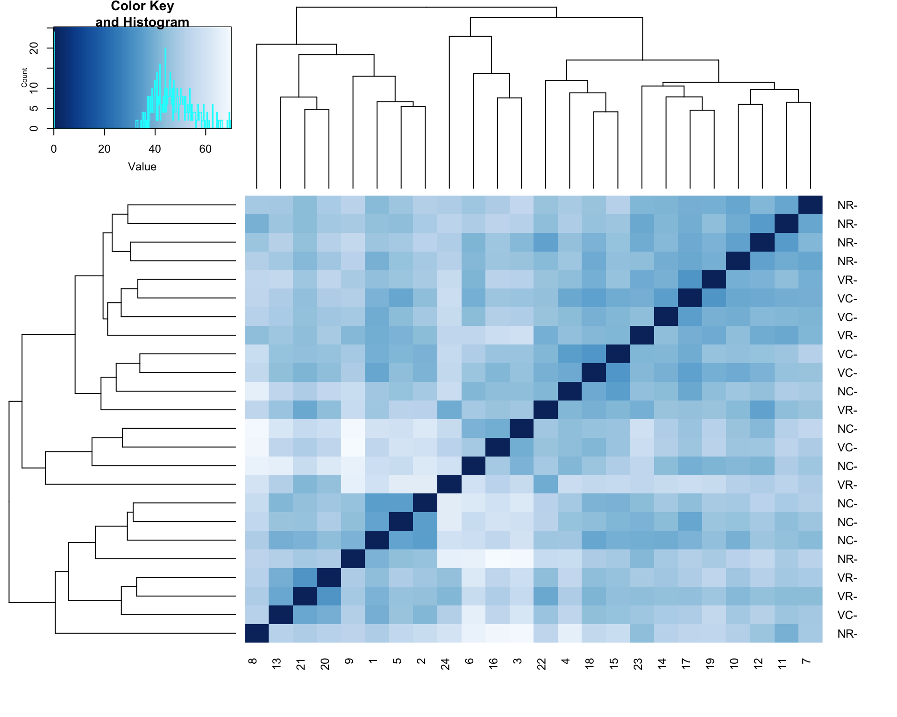
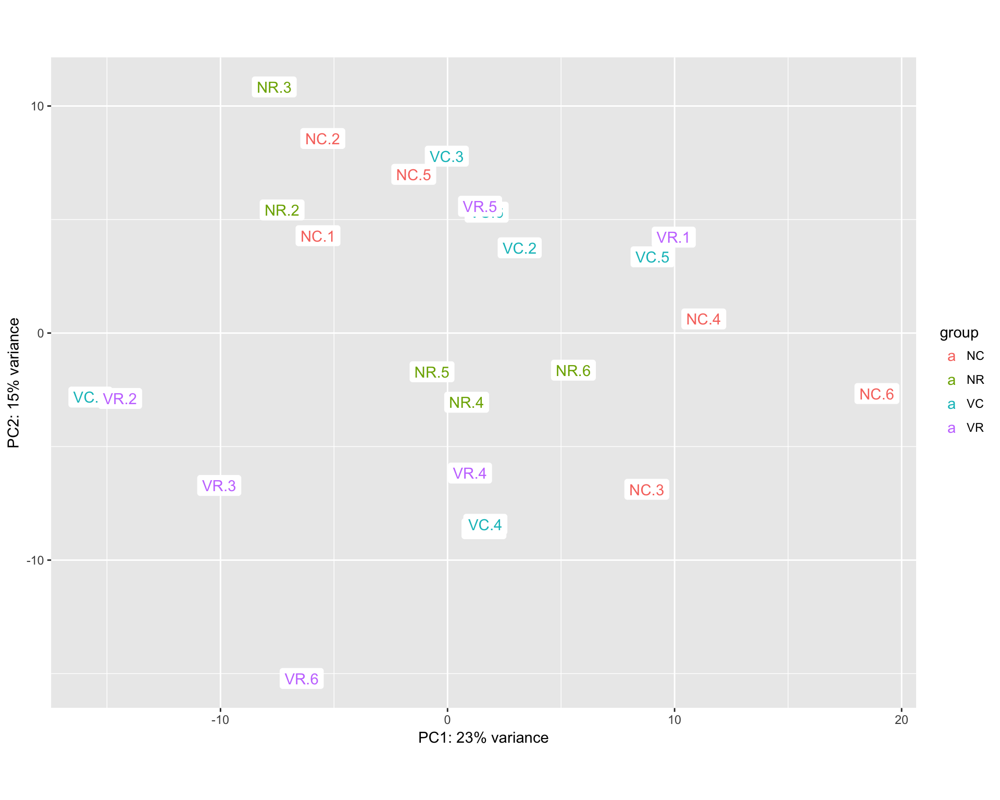

library(DESeq2)
library(gplots)
library(RColorBrewer)
library(data.table)
library(ggplot2)
thisPath <- getwd()
data <- readRDS("../../data/data.Rds")
data <- as.matrix(data)
coldata = data.frame(row.names = colnames(data), virus = unlist(lapply(colnames(data), function (x) substring(unlist(strsplit(x, "[.]"))[1],1,1))), diet = unlist(lapply(colnames(data), function (x) substring(unlist(strsplit(x, "[.]"))[1],2,2))), treatment = unlist(lapply(colnames(data), function (x) unlist(strsplit(x, "[.]"))[1])))
dds = DESeqDataSetFromMatrix(countData = data, colData = coldata, design = ~ treatment)
dds <- DESeq(dds)estimating size factorsestimating dispersionsgene-wise dispersion estimatesmean-dispersion relationshipfinal dispersion estimatesfitting model and testingWe can examine pairwise combinations of all samples
uTreat <- unique(unlist(lapply(colnames(data), function (x) unlist(strsplit(x, "[.]"))[1])))
allPairs = data.frame(Treatment1 = factor(), Treatment2 = factor(), NumberDEG = numeric())
dataMetrics <- list()
for (i in 1:(length(uTreat)-1)){
for (j in (i+1):length(uTreat)){
res <- results(dds, contrast=c("treatment",uTreat[i],uTreat[j]))
hist(res$pvalue, breaks=20, col="grey", main=paste("pvalue for", uTreat[i], "and", uTreat[j]))
degLength <- length(which((res@listData)$padj <0.05))
allPairs = rbind(allPairs, data.frame(Treatment1 = uTreat[i], Treatment2 = uTreat[j], NumberDEG = degLength))
metrics = as.data.frame(res@listData)
metrics = cbind(ID = res@rownames, metrics)
metrics$ID = as.character(metrics$ID)
dataMetrics[[paste0(uTreat[i], "_", uTreat[j])]] <- metrics
}
}
allPairs <- allPairs[order(allPairs$NumberDEG),]
allPairs Treatment1 Treatment2 NumberDEG
2 NC VC 0
5 NR VR 178
6 VC VR 376
3 NC VR 774
1 NC NR 941
4 NR VC 955saveRDS(dataMetrics, file="dataMetrics.Rds")plotDispEsts(dds, ylim = c(1e-6, 1e1))
Taking rlog transformation for EDA.
rld <- rlog(dds)
rldDF <- as.data.frame(assay(rld))
saveRDS(rldDF, file="dataRLD.Rds")sampleDists <- dist(t(assay(rld)))
sampleDistMatrix <- as.matrix(sampleDists)
rownames(sampleDistMatrix) <- paste(rld$treatment, rld$patient, sep="-")
colnames(sampleDistMatrix) <- NULL
colours = colorRampPalette(rev(brewer.pal(9, "Blues")))(255)
heatmap.2(sampleDistMatrix, trace="none", col=colours)
print(plotPCA(rld, intgroup="treatment") + geom_label(aes(label = name), label.size=0.001))